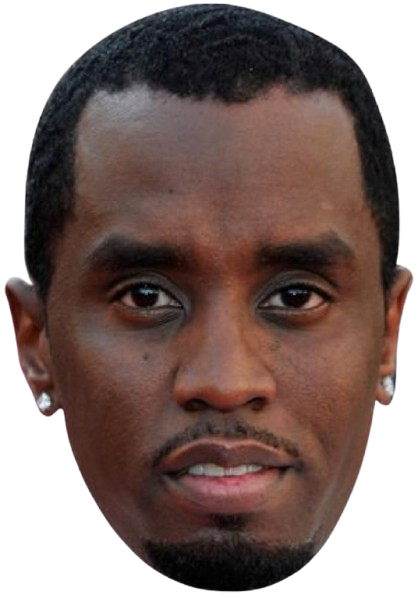

Comment jouer
Bienvenue à la Diddy Party !
L'objectif est simple : aidez Diddy à manger Justin Bieber tout en évitant les obstacles et en utilisant la police pour l'aider.
Instructions :
Déplacer Diddy : Utilisez votre souris pour contrôler les mouvements de Diddy.
Manger Justin Bieber : Diddy doit manger les personnages Justin Bieber pour gagner des points.
Éviter les obstacles : Faites attention aux obstacles (comme la police et le FBI) qui compliqueront votre tâche.
Utiliser la police : Diddy peut payer la police pour travailler pour lui et l'aider à éviter les ennuis !
Commandes :
L : Passer en mode Leader – Dans ce mode, Diddy prend les commandes et mène la voie !
S : Passer en mode Serpent – Dans ce mode, les véhicules suivent les autres comme un serpent.
O : Ajouter des obstacles – Ajoutez des obstacles pour rendre le jeu plus difficile.
M : Retourner au menu – Revenez au menu principal si vous avez besoin d'une pause.
Bonne chance et amusez-vous bien ! Profitez de la fête ! 🎉